2026-02-08
LC_ALL=C lscpu | grep Virtualization「Virtualization: AMD-V」と表示されればOK。
何も表示されないときは BIOS で AMD-V を有効にする。
GIGABYTE 製マザーボードの場合は次のように行う。
「Tweaker」タブを選択
「Advanced CPU Settings」をクリック
「SVM Mode」を「Enabled」にする
yay -S --needed virt-manager qemu-fullバックエンドを変更しないとネットに接続できなかった。
cp /etc/libvirt/network.conf network.conf
sed -i -e 's,#firewall_backend\ =\ "nftables",firewall_backend\ =\ "iptables",g' network.conf
sudo mv network.conf /etc/libvirt/network.conf
sudo systemctl start iptables
# システム起動時に実行する場合
sudo systemctl enable iptablessudo systemctl start libvirtd
# システム起動時に実行する場合
sudo systemctl enable libvirtdsudo virt-manager「ファイル」→「接続を追加」をクリック
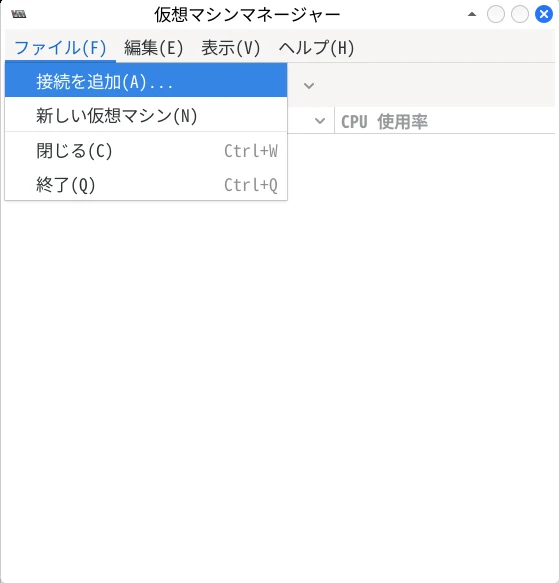
ハイパーバイザーを選択
「QEMU/KVM」を選択し、「接続」をクリック
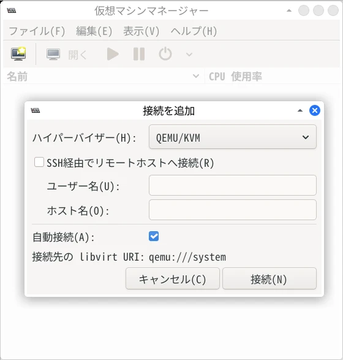
新しい仮想マシンを作成
メイン画面の「QEMU/KVM」を右クリックして「新規」を選択
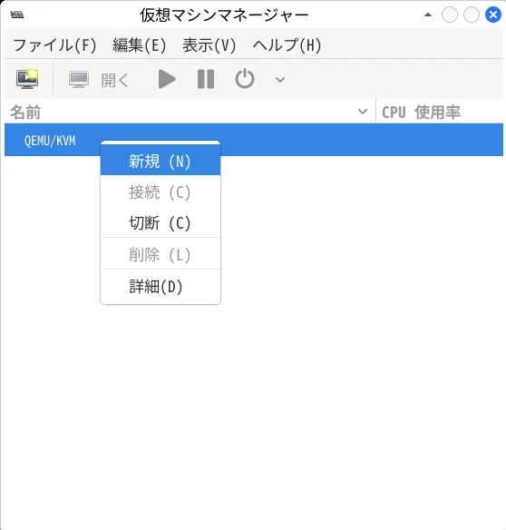
OS のインストール方法を選択
「ローカルのインストールメディア（ISO イメージまたは CD-ROM
ドライブ）」を選択。
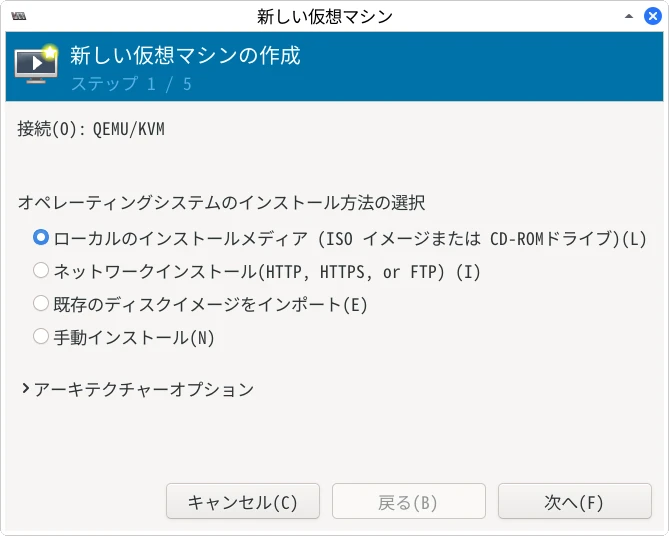
ISO ファイルを指定
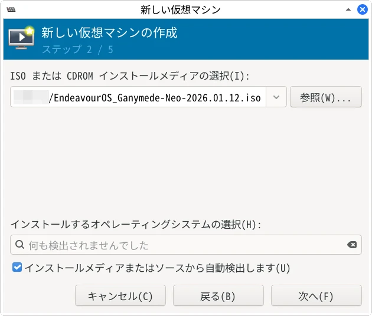
OS の選択欄に「何も検出されませんでした」と表示された場合
「インストールメディアまたはソースから自動検出」のチェックを外す。
検索ボックスに「generic」と入力し、「Generic Linux 2024」を選択。
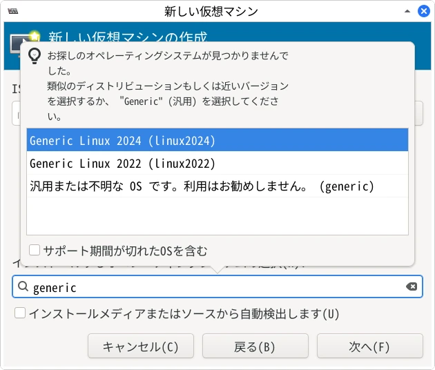
メモリの使用量とCPUの個数を設定
「このホストでは n MiB まで使用できます」「最大 n
個まで利用できます」と表示されているので、最大数の半分を指定。
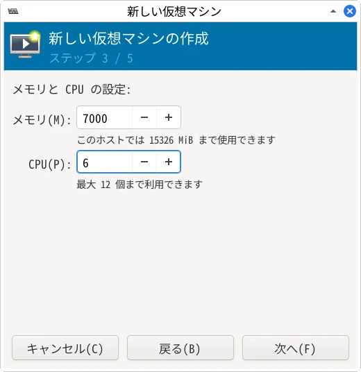
仮想マシンのストレージを作成
「カスタムストレージの選択または作成」にチェックをいれて「管理」をクリック。
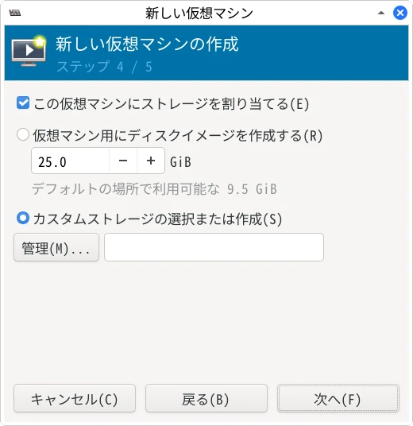
左側の欄でホームディレクトリを選択し、「ボリューム」の右側にある「＋」をクリック
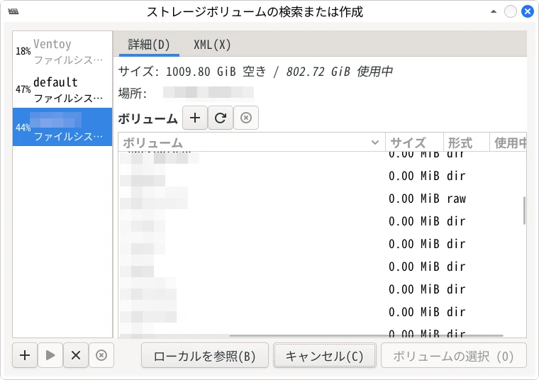
ストレージファイルの名前を設定
ここでは「EndeavourOS」にする。
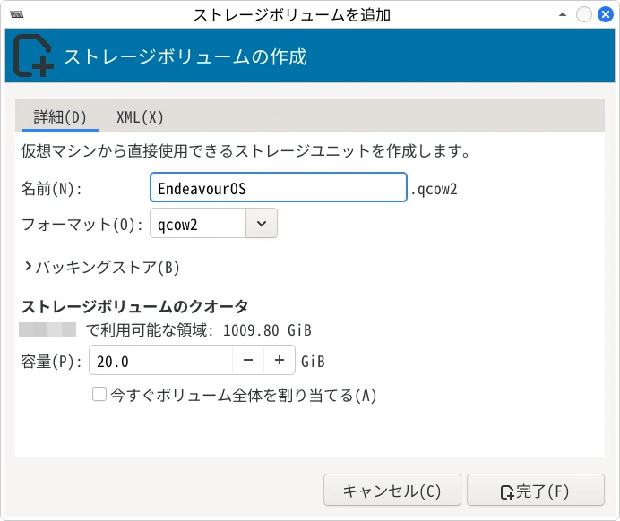
作成されたストレージファイルを選択
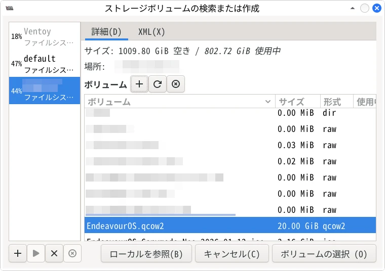
「次へ」をクリック
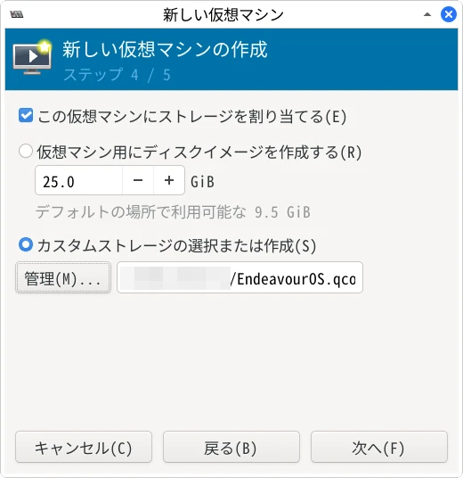
仮想マシンの名前を設定
ここでは「EndeavourOS」にする。
「完了」を押すと仮想マシンが起動する。
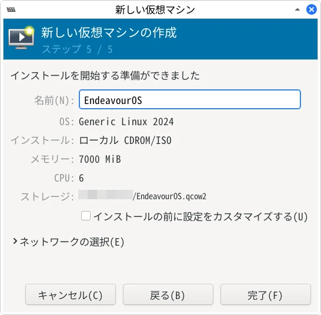
ブートローダー画面で OS を選択
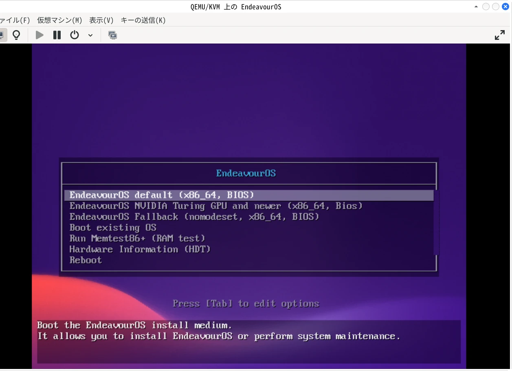
仮想マシンをシャットダウン
シャットダウンするときは左上の赤い電源ボタンをクリック。
インストールせずにシャットダウンした場合は、ストレージが空なので次回電源ボタンを押しても何も起動しない。ISO
ファイルの選択からやり直す。
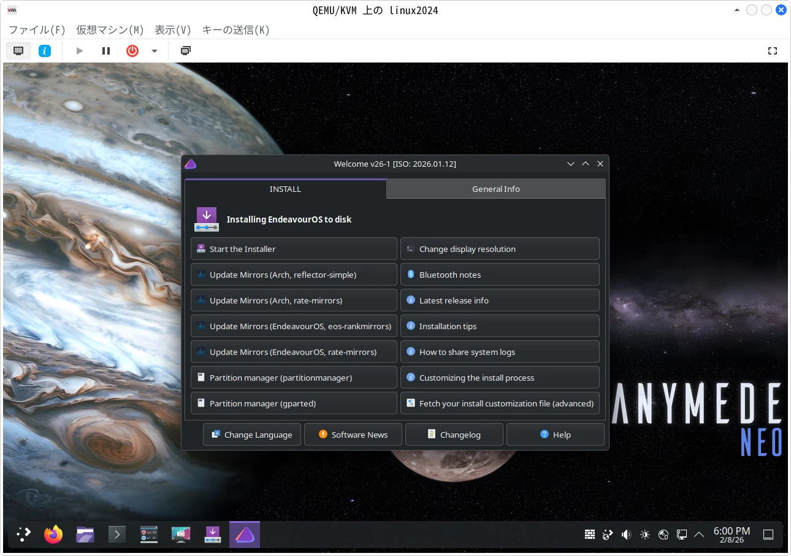
virt-manager の「EndeavourOS」を右クリックして「削除」を選択。